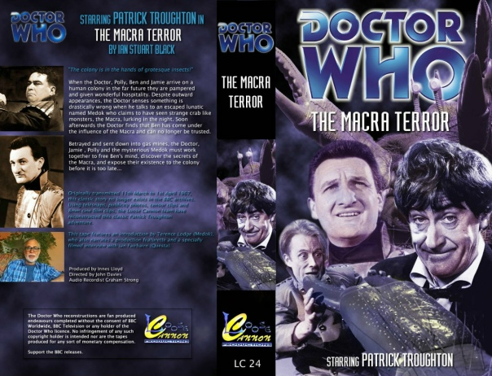
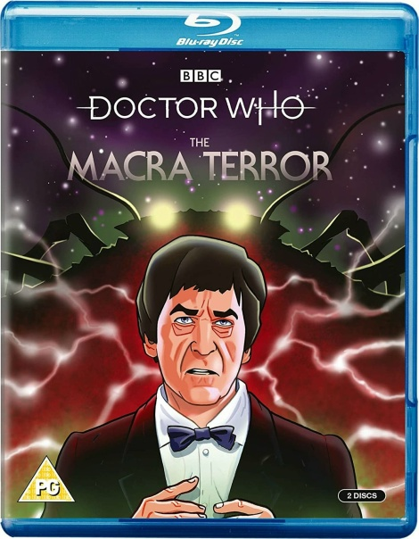
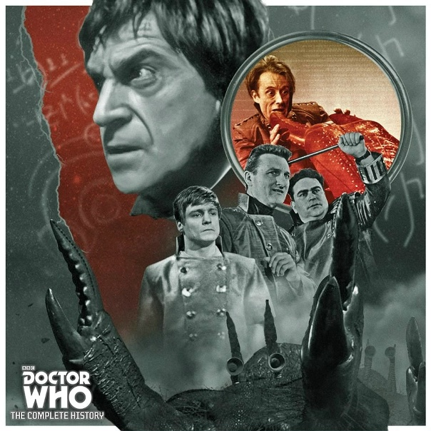
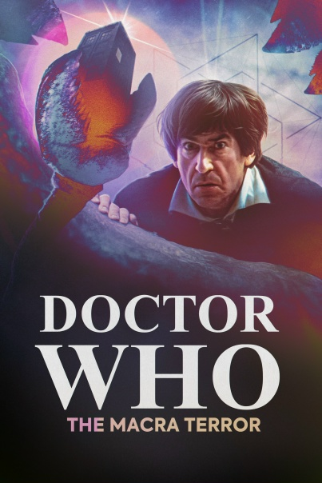
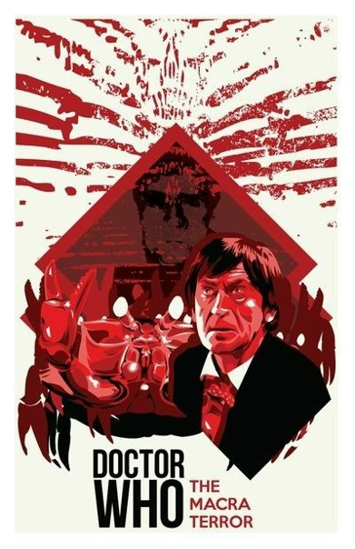

Эра Второго Доктора (4 сезон)
<<< НАЗАД ||| 7. Террор Макра ||| ДАЛЬШЕ >>>
* расширенная сцена в 1-м эпизоде озвучена VO fm646 Субтитры: Русские и Английские |  |
|---|---|
Субтитры: Русские и Английские | |
Субтитры: Русские и Английские | |
Эпизод 1. Отрывок: Сцена в спа (drwhoanimator, BBC Official)
11 марта - 1 апреля 1967
4 эпизода по 25 мин.
| Все эпизоды утеряны * Имеется реконструкция * Имеется ч/б и цветная анимация |
|---|
 |  |  |
«Террор Макра» — колония, притворяющаяся беззаботным курортом, прячет под глянцевой улыбкой смертельную угрозу: гигантские Макра тайно правят людьми, промывая им разум и заставляя добывать ядовитый газ, жизненно важный для чудовищ. Второй Доктор с Беном, Полли и Джейми сталкивается не просто с монстрами, а с системой, где страх и послушание стали нормой, и в тесных шахтах и фальшивых празднествах они ищут способ разбить эту иллюзию. Тон истории липкий и тревожный, будто сама колония дышит чуждой, холодной волей, а надежда держится на тех, кто ещё способен усомниться.
 LC recon - январь 2006 |  Blu-ray (Анимация) - 25 марта 2019 * Версия в нашей группе |
|---|






